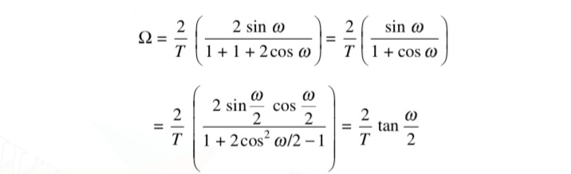

DESIGN OF IIR FILTERS USING BILINEAR TRANSFORMATION
IIR filter can be designed using (a) approximation of derivatives method and (b) Impulse invariant transformation method. However the IIR filter design using these methods is appropriate only for the design of low-pass filters and band pass filters whose resonant frequencies are small. These techniques are not suitable for high-pass or band rejects filters.
The limitation is overcome in the mapping technique called the bilinear transformation. This transformation is a one-to-one mapping from the s-domain to the z-domain. That is, the bilinear transformation is a conformal mapping that transforms the imaginary axis of s-plane into the unit circle in the z-plane only once, thus avoiding aliasing of frequency components.
In this mapping, all points in the left half of s-plane are mapped inside the unit circle in the z-plane, and all points in the right half of s-plane are mapped outside the unit circle in the z-plane. So the transformation of a stable analog filter results in stable digital filter. The bilinear transformation can be obtained by using the trapezoidal formula for the numerical integration.
The differential equation describing the above analog filter can be obtained as:

Taking inverse Laplace transform on both sides and applying z transform, we get
Comparing this with the analog filter system function Ha(s) we get
The general characteristic of the mapping z = e sT may be obtained by

From the above equation for , we observe that if r < 1 then σ < 0 and if r > 1, then σ > 0, and if r = 1, then σ = 0. Hence the left half of the s-plane maps into points inside the unit circle in the z-plane, the right half of the s-plane maps into points outside the unit circle in the z-plane and the imaginary axis of s-plane maps into the unit circle in the z-plane. This transformation results in a stable digital system.
Relation between analog and digital frequencies

The relaton between analog and digital frequencies is given by,

Mapping between analog and digital frequencies in bilinear transformation is given by

The effect of warping on the magnitude response can be explained by considering an analog filter with a number of passbands as shown in Figure 2(a). The corresponding digital filter will have same number of passbands, but with disproportionate bandwidth
In designing digital filter using bilinear transformation, the effect of warping on amplitude response can be eliminated by prewarping the analog filter. In this method, the specified digital frequencies are converted to analog equivalent using the equation These analog frequencies are called prewarp frequencies. Using the prewarp frequencies, the analog filter transfer function is designed, and then it is transformed to digital filter transfer function. This effect of warping on the phase response can be explained by considering an analog filter with linear phase response as shown in Figure 2(b). The phase response of corresponding digital filter will be nonlinear

It can be stated that the bilinear transformation preserves the magnitude response of an analog filter only if the specification requires piecewise constant magnitude, but the phase response of the analog filter is not preserved. Therefore, the bilinear transformation can be used only to design digital filters with prescribed magnitude response with piecewise constant values. A linear phase analog filter cannot be transformed into a linear phase digital filter using bilinear transformation.
EXAMPLE 1: